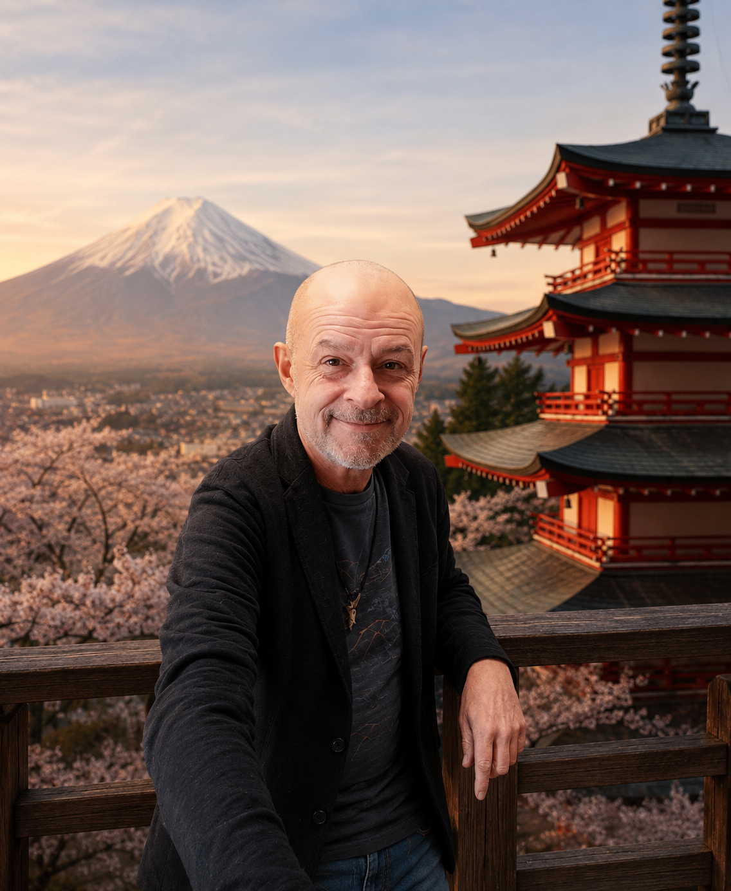
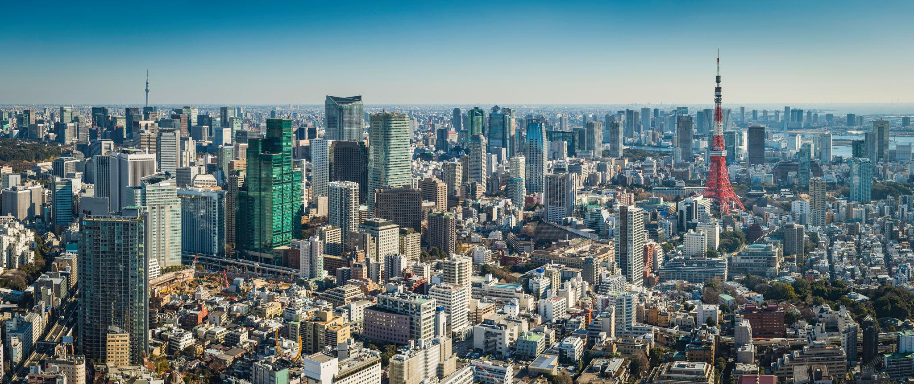
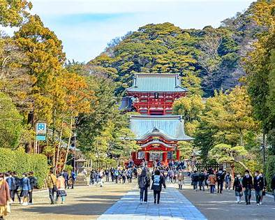

📍 Tokyo & surrounding areas, Japan
Discover Tokyo
like a local
Skip the guidebook. Terry has lived in Japan for 27 years and knows every neighborhood, hidden gem, and local secret worth knowing.







Drop your email and Terry will be in touch to plan your perfect day out.